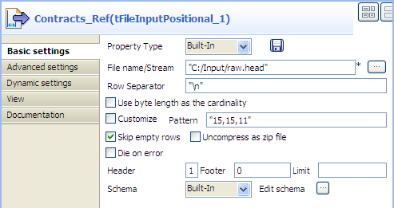
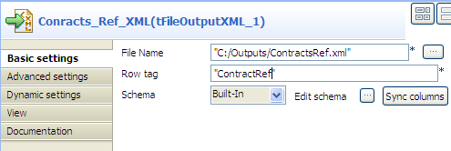
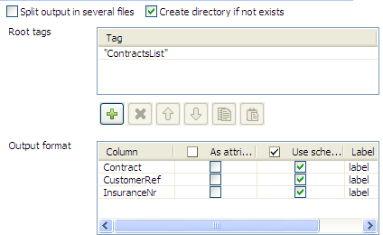
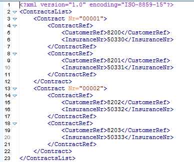

|
Component family |
File/Input | |
|
Function |
tFileInputPositional reads a given file row by row and extracts fields based on a pattern. | |
|
Purpose |
This component opens a file and reads it row by row to split them up into fields then sends fields as defined in the schema to the next Job component, via a Row link. | |
|
Basic settings |
Property type |
Either Built-in or Repository. |
|
|
|
Built-in: No property data stored centrally. |
|
|
|
Repository: Select the repository file where the properties are stored. The fields that follow are completed automatically using the data retrieved. |
|
|
File Name/Stream |
File name: Name and path of the file to be processed. Stream: The data flow to be processed. The data must be added to the flow in order for tFileInputPositional to fetch these data via the corresponding representative variable. This variable could be already pre-defined in your Studio or provided by the context or the components you are using along with this component, for example, the INPUT_STREAM variable of tFileFetch; otherwise, you could define it manually and use it according to the design of your Job, for example, using tJava or tJavaFlex. In order to avoid the inconvenience of hand writing, you could select the variable of interest from the auto-completion list (Ctrl+Space) to fill the current field on condition that this variable has been properly defined.
Related topic to the available variables: see Talend Open Studio User Guide Related scenario to the input stream, see the section called “Scenario 2: Reading data from a remote file in streaming mode”. |
|
|
Row separator |
String (ex: “\n”on Unix) to distinguish rows. |
|
|
Use byte length as the cardinality |
Select this check box to enable the support of double-byte character to this component. JDK 1.6 is required for this feature. |
|
|
Customize |
Select this check box to customize the data format of the positional file and define the table columns: Column: Select the column you want to customize. Size: Enter the column size. Padding char: Type in between inverted commas the padding character used in order for it to be removed from the field. A space by default. Alignment: Select the appropriate alignment parameter. |
|
|
Pattern |
Length values separated by commas, interpreted as a string between quotes. Make sure the values entered in this field are consistent with the schema defined. |
|
|
Skip empty rows |
Select this check box to skip empty rows. |
|
|
Uncompress as zip file |
Select this check box to uncompress the input file. |
|
|
Die on error |
Select this check box to stop the execution of the Job when an error occurs. Clear the check box to skip the row on error and complete the process for error-free rows. If needed, you can collect the rows on error using a Row > Reject link. |
|
|
Header |
Number of rows to be skipped in the beginning of file |
|
|
Footer |
Number of rows to be skipped at the end of the file. |
|
|
Limit |
Maximum number of rows to be processed. If Limit = 0, no row is read or processed. |
|
|
Schema and Edit Schema |
A schema is a row description, i.e., it defines the number of fields that will be processed and passed on to the next component. The schema is either built-in or remote in the Repository.
|
|
|
|
Built-in: The schema will be created and stored locally for this component only. Related topic: see Talend Open Studio User Guide. |
|
|
|
Repository: The schema already exists and is stored in the Repository, hence can be reused in various projects and Job flowcharts. Related topic: see Talend Open Studio User Guide. |
|
Advanced settings |
Needed to process rows longer than 100 000 characters |
Select this check box if the rows to be processed in the input file are longer than 100 000 characters. |
|
|
Advanced separator (for numbers) |
Select this check box to modify the separators used for numbers: Thousands separator: define separators for thousands. Decimal separator: define separators for decimals. |
|
|
Trim all column |
Select this check box to remove leading and trailing whitespaces from defined columns. |
|
|
Validate date |
Select this check box to check the date format strictly against the input schema. |
|
|
Encoding |
Select the encoding type from the list or select Custom and define it manually. This field is compulsory for DB data handling. |
|
|
tStatCatcher Statistics |
Select this check box to gather the Job processing metadata at a Job level as well as at each component level. |
|
Usage |
Use this component to read a file and separate fields using a position separator value. You can also create a rejection flow using a Row > Reject link to filter the data which does not correspond to the type defined. For an example of how to use these two links, see the section called “Scenario 2: Extracting correct and erroneous data from an XML field in a delimited file”. | |
The following scenario describes a two-component Job, which aims at reading data from an input file that contains contract numbers, customer references, and insurance numbers as shown below, and outputting the selected data (according to the data position) into an XML file.
Contract CustomerRef InsuranceNr 00001 8200 50330 00001 8201 50331 00002 8202 50332 00002 8203 50333

Drop a tFileInputPositional component from the Palette to the design workspace.
Drop a tFileOutputXML component as well. This file is meant to receive the references in a structured way.
Right-click the tFileInputPositional component and select Row > Main. Then drag it onto the tFileOutputXML component and release when the plug symbol shows up.
Double-click the tFileInputPositional component to show its Basic settings view and define its properties.
Define the Job Property type if needed. For this scenario, we use the built-in Property type.
As opposed to the Repository, this means that the Property type is set for this station only.
Fill in a path to the input file in the File Name field. This field is mandatory.
Define the Row separator identifying the end of a row if needed, by default, a carriage return.
If required, select the Use byte length as the cardinality check box to enable the support of double-byte character.
Define the Pattern to delimit fields in a row. The pattern is a series of length values corresponding to the values of your input files. The values should be entered between quotes, and separated by a comma. Make sure the values you enter match the schema defined.
Fill in the Header, Footer and Limit fields according to your input file structure and your need. In this scenario, we only need to skip the first row when reading the input file. To do this, fill the Header field with 1 and leave the other fields as they are.
Next to Schema, select Repository if the input schema is stored in the Repository. In this use case, we use a Built-In input schema to define the data to pass on to the tFileOutputXML component.
You can load and/or edit the schema via the Edit Schema function. For this schema, define three columns, respectively Contract, CustomerRef and InsuranceNr matching the structure of the input file. Then, click OK to close the [Schema] dialog box and propagate the changes.

Double-click tFileOutputXML to show its Basic settings view.
Enter the XML output file path.
Define the row tag that will wrap each row of data, in this use case ContractRef.
Click the three-dot button next to Edit schema to view the data structure, and click Sync columns to retrieve the data structure from the input component if needed.
Switch to the Advanced settings tab view to define other settings for the XML output.
Click the plus button to add a line in the Root tags table, and enter a root tag (or more) to wrap the XML output structure, in this case ContractsList.
Define parameters in the Output format table if needed. For example, select the As attribute check box for a column if you want to use its name and value as an attribute for the parent XML element, clear the Use schema column name check box for a column to reuse the column label from the input schema as the tag label. In this use case, we keep all the default output format settings as they are.
To group output rows according to the contract number, select the Use dynamic grouping check box, add a line in the Group by table, select Contract from the Column list field, and enter an attribute for it in the Attribute label field.

Leave all the other parameters as they are.
Press Ctrl+S to save your Job to ensure that all the configured parameters take effect.
Press F6 or click Run on the Run tab to execute the Job.
The file is read row by row based on the length values defined in the Pattern field and output as an XML file as defined in the output settings. You can open it using any standard XML editor.
